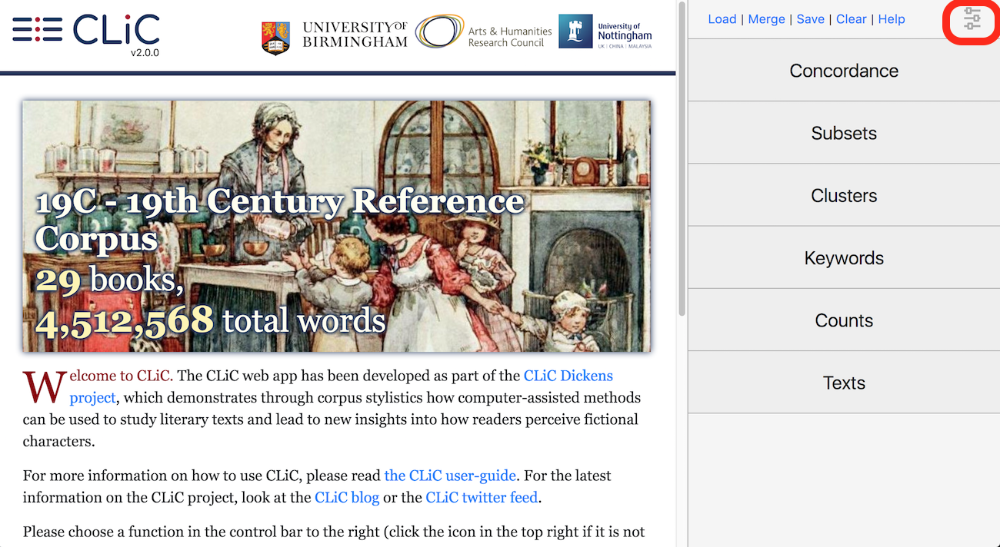

General functions¶
The landing page shows a rotating summary of the CLiC corpora. Click onto one of the tabs in the control bar on the right side to start your analysis. The CLiC logo will take you back to the landing page.
The CLiC functions can be divided into two groups:
A: The ‘Concordance’ and ‘Subsets’ tabs both display text (patterns) from the selected books in context. This is where you can analyse the use of particular words and phrases.
B: The ‘Clusters’ and ‘Keywords’ tabs both show lists of frequent patterns (without context), but they differ in their applications. The Clusters tab lists frequent words and word sequences (‘clusters’) in a single corpus (or several corpora if you have selected more than one). In the Keywords tab, you can compare the frequency of words and clusters in one corpus with another; CLiC will provide a list of those items that are significantly “overused” in the first corpus (for more information, see the Keywords section).
Functions common to all tabs
At any point, you can close the menu on the right by clicking on the
menu icon in the top right corner (see figure-landing-page-2_0_0_19C_menu).

Close the sidebar menu by clicking on the menu icon in the top right corner¶
Saving plain and annotated results
The buttons in the top row apply to all analysis tabs:
‘Load’: You can upload a previously exported CLiC CSV file to restore your settings and your tag annotation (see the Manage tag columns subsection of the Concordance documentation). The CSV file can only be reimported to CLiC if you haven’t made any changes to it. We would therefore recommend keeping the original copy for potentially loading it back into CLiC (as well as for your personal record) and saving any manual changes (e.g. comments, highlights, filtered lines) in a separate version. Also note that the ‘Load’ function will replace any existing tags in CLiC with those from the file; unlike ‘Merge’, see below.
‘Merge’: The ‘Merge’ function will add the tags from the CSV file to any pre-existing tags. You can also use this function when you have more than one CSV (for example with annotations from several researchers) so you can merge these in order to check to what extent the tag sets overlap or differ.
‘Save’: Save your results, settings and annotated tags in a CSV file that can be opened in a spreadsheet viewer. The file contains a (shareable) link that will replicate your search settings.
‘Clear’: Resets the search settings and any tag columns. (Identical to clicking the CLiC icon.)
For both ‘Load’ and ‘Merge’ the results/queries have to be compatible, i.e. they have to be based on the same node word.
Printing the results
If you have already saved the results in a CSV file, you may want to
print that file directly from your spreadsheet viewer. However, the CSV
file will not preserve any of the colours or the highlighting that you
may have created with the KWICGrouper function (see the KWICGrouper subsection
of the Concordance documentation). In order to print the output
in colour, go to the Chrome printing menu, click on ‘More settings’ and
tick ‘Background graphics’ (see figure-analysis-common-printing-settings; other browsers
should have similar settings). The layout also tends to print best in
landscape format. You can then “print” the output to a PDF file or straight to
your printer.

Settings for printing CLiC output in colour using the Chrome print menu¶